How to drive - A quick overview on controls, ATS/ATC, signals and signs
This page describes the basic driving controls and interfaces. When you are driving a train, the interface you are presented with looks somewhat like this:
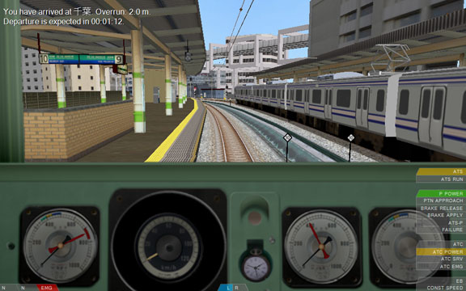
In the following, the invidual elements of the interface are explained and you are given instructions on how to operate the train. Please note that controls are given with their name and their default keyboard configuration, e.g. POWER_INCRASE (Z). If you remap the keyboard controls or assign controls to joysticks, work with the names to identify the underlying control.
Additionally, it should be noted that some trains use plugins that provide their own driving mechanisms and safety systems. This page mainly depicts the built-in systems. You should, in any case, consult the operational manual of the train (if available) for more specific details.
- The reverser, power lever and brake controls
- The EB and CONST SPEED systems
- Operating the doors
- Signals and signs
- Using ATS-SN
- Using ATS-P
- Using ATC
- Miscellaneous interface elements
The reverser, power lever and brake controls
The most basic controls in the train include the reverser, the power lever, the brake lever and the emergency brakes. The states of the reverser, power lever and brake lever are depicted in the bottom-left corner of the screen in this order. The emergency brake is depicted as part of the brake indicator if applied. If the train uses a combined power/brake handle, the power and brake indicators are merged into a single indicator.
Reverser
To change the direction of travel, operate the reverser. There are three states of the reverser: B (backward), N (neutral) and F (forward) (F). Normally, when you start the simulation, you will have to move the reverser into the forward position.
In order to move the reverser toward the forward position by one notch, press the REVERSER_FORWARD (F) key. To move the reverser backward by one notch, press the REVERSER_BACKWARD (B) key.
Power lever
The power lever controls how much power is applied to the engines. If the power is cut off, the power indicator will display N. If a power notch is selected, the indicator will display anything like P1, P2, P3, and so on. The amount of power notches available depends on the train. Generally, a higher power notch corresponds to higher acceleration. Be aware though that applying too much power can result in wheel-slip, which prevents the train from accelerating altogether.
In order to increase the power notch on a train with separate power/brake handles, press the POWER_INCREASE (Z) key. To decrease the power notch, press the POWER_DECREASE (A) key. On a train with a combined power/brake handle, press the SINGLE_POWER (Z) key to increase the power notch. To decrease the power notch, press either the SINGLE_NEUTRAL (A) or the SINGLE_BRAKE (Q) key.
Brake lever (with notches)
The brake lever controls how much power is applied to the electric brakes, or how much pressure is applied to the physical brakes. If the brakes are cut off, the indicator will display N. If a brake notch is selected, the indicator will display anything like B1, B2, B3, and so on. The amount of brake notches depends on the train. Higher brake notches correspond to higher deceleration. Be aware though that applying too much brake can result in wheel-lock, which prevents the train from decelerating altogether.
In order to increase the brake notch on a train with separate power/brake handles, press the BRAKE_INCREASE (.) key. To decrease the brake notch, press the BRAKE_DECREASE (,) key. On a train with a combined power/brake handle, press the SINGLE_BRAKE (Q) key to increase the brake notch. To decrease the brake notch, press either the SINGLE_NEUTRAL (A) or the SINGLE_POWER (Z) key.
Some trains are also equipped with a hold brake. The hold brake appears between the N and B1 notch and allows the train to hold the speed when driving on a downward slope, meaning it automatically applies the brakes to prevent the train from accelerating. The hold brake does not apply power on an upward slope, though.
Brake valve (automatic air brake)
Some trains employ an automatic air brake which does not have brake notches but a brake valve that is operated manually. These trains always have separate power/brake handles. The states of this brake valve include REL (release), LAP (lap) and SRV (service). In order to move the valve from REL to LAP, or from LAP to SRV, press the BRAKE_INCREASE (.) key. To move the valve from SRV to LAP, or from LAP to REL, press the BRAKE_DECREASE (,) key.
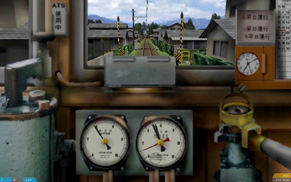
In order to operate the automatic air brake, you need to observe the pressure in the brake cylinders. In the above screenshot, the brake cylinder is depicted by the red needle on the right gauge. When the brake valve is set to REL (release), the pressure in the brake cylinder decreases. If at zero, the train does not decelerate any longer. When set to SRV (service), the pressure increases. If at the maximum possible pressure, the train decelerates the strongest. When set to LAP (lap), the pressure is kept at the current level, maintaining the current rate of deceleration.
Please note that with an automatic air brake, the brake valve does not control the brake cylinders directly, and as such, there are noticable delays from changing the valve position to the desired effect. You will need to practice using the automatic air brake numerous times before you master it.
Additionally, some trains that use the automatic air brake don't include a brake cylinder needle in the cab. However, they may feature a brake pipe needle. The brake pipe is somewhat of an inverse readout: High pressure corresponds to low deceleration, while low pressure corresponds to high deceleration.
Emergency brake
On a train with separate power/brake handles, the emergency brakes can be applied by pressing the BRAKE_EMERGENCY (/) key. With a combined power/brake handle, press the SINGLE_EMERGENCY (1) key. The emergency brakes, once applied, usually apply a higher level of deceleration than the service brakes.
In order to release the emergency brakes, press the key that corresponds to decreasing the brake notch, e.g. BRAKE_DECREASE (,), SINGLE_NEUTRAL (A) or SINGLE_POWER (Z), depending on the train.
The EB and CONST SPEED systems
Trains that are equipped with an EB or a CONST SPEED system include a respective indicator in the bottom-right corner of the screen.
The EB system is a form of a vigilance device that keeps track of the reverser, power and brake levers. If present in a train and the controls remain unchanged for 60 seconds, an alarm will sound and the EB indicator lights up in orange. You now have 5 seconds to acknowledge the alarm by pressing the SECURITY_A2 (delete) key. Otherwise, an emergency brake application will be performed by ATS-SN. See the section about ATS-SN for further information about what to do.
The CONST SPEED system allows the train to hold its current speed by reducing the power appropriately. It does not prevent the train from accelerating on a downward slope. If present in a train, the device can be switched on and off via the DEVICE_CONSTSPEED (backspace) key. If on, the CONST SPEED indicator lights up in green. Before turning the device on, increase the power notch to the desired maximum power. The CONST SPEED device will then select any power setting up to that corresponding to the selected power notch. Usually, you will increase the power notch to maximum when using the CONST SPEED device.
Operating the doors
On some trains, you can manually operate the doors, while on others, the doors are automatic. The state of the doors is depicted by indicators at the bottom-middle of the screen if at least one door is not fully closed.
There are two indicators: L (left doors) and R (right doors). The indicators are color-coded to represent the current state. Gray
indicates that the doors are fully closed, orange
that they are neither fully opened nor fully closed, while green
or blue
indicate that the doors are fully opened.
If the doors close automatically, the indicator displays blue, otherwise green, and you have to close them manually.
If manual operation is possible, open or close the doors by pressing DOORS_LEFT (F5) for the left doors, or DOORS_RIGHT (F6) for the right doors.
Signals and signs
Some routes make use of Japanese signals and signs which are provided as part of openBVE. These signals and signs are explained in the following. Please refer to the operational manual of the route (if available) for further information, or in the case the route uses different signals and signs (which is most likely).
There are up to six-aspect signals. The aspects include:
| Aspect | Meaning |
|---|---|
| red | Stop |
| yellow yellow | Speed restriction (25 km/h) |
| yellow | Caution (45-55 km/h) |
| yellow green | Reduced speed (65-85 km/h) |
| green | Proceed (130 km/h - unlimited) |
| green green | High speed proceed (unlimited) |
The signal speed limits depend on the particular route used. Please note that the route speed limits must be followed independently.
| 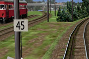 | This updates the route speed limit (expressed in km/h). If the new route speed limit is lower than the old one, the new route speed limits takes effect immediately upon passing the speed post with the front of the train. If the new route speed limit is higher than the old one, the whole train must have passed the sign first before the new route speed limit takes effect. Please note that signal speed limits must be followed independently. |
| 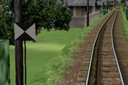 | This updates the route speed limit to unlimited speed. The whole train must have passed the sign first before the unlimited speed takes effect. Please note that signal speed limits must be followed independently. |
| 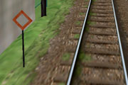 | This is a station stop point. Stop in a way as for the front of the train to line up with the stop post. |
Using ATS-SN
ATS-SN (automatic train stop - SN) is a Japanese safety system intended to prevent the train from passing a red signal by applying the emergency brake if the driver does not acknowledge alarms in time.
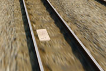
About 600 meters from a signal, an S-type transponder (white box) is placed that raises an alarm in the cab if the associated signal is red. This alarm has to be acknowledged within 5 seconds, or otherwise, an emergency brake application will be performed. In order to acknowledge the alarm, you need to cut off power and apply at least brake notch B1 (or SRV with automatic air brakes), then press the SECURITY_S (space) key. The alarm will now go off and is replaced with a chime. This chime is intended to remind you that the upcoming signal is red and should not be canceled until you know otherwise. In order to cancel the chime, press the SECURITY_A1 (insert) key.
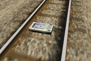
About 20 meters from a signal, an SN-type transponder (green box) is sometimes placed. If the associated signal is red, the SN-type transponder directly forces an emergency brake application.
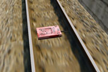
After stop points, an accidental departure transponder (red box) is sometimes placed. If the associated signal is red, this transponder directly forces an emergency brake application. This transponder also triggers if ATS-P is used.
Once an emergency brake application is performed, you have to reset the safety system. Do so by cutting power, applying the emergency brakes, setting the reverser to neutral, then pressing the SECURITY_B1 (Home) key.
You can turn on the safety systems by pressing the SECURITY_D (2) key, and off by pressing the SECURITY_E (3) key.
Trains equipped with ATS-SN include these indicators in the bottom-right corner of the screen:
| ATS | This is lit orange when ATS-SN is currently active (turned on). |
| ATS RUN | This is lit red when you have to acknowledge an alarm within 5 seconds, or flashes red when an emergency brake application is performed. |
Using ATS-P
ATS-P (automatic train stop - pattern) is a Japanese safety system intended to prevent a train from passing a red signal by continuously calculating a brake curve and ensuring that the train does not exceed the calculated speed limit.
ATS-P is used along with ATS-SN. You can turn on the safety systems by pressing the SECURITY_D (2) key, and off by pressing the SECURITY_E (3) key.
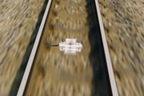
On several locations in front of a signal, pattern renewal transponders (white boxes) are placed. The farthest one is usually about 600 meters away from the signal. If not already active, passing such a transponder usually activates ATS-P. If the associated signal is red, ATS-P calculates a brake curve and ensures that the train travels below the calculated speed limit. There are no alarms that need to be acknowledged. If the train travels too fast, ATS-P brakes the train until below the calculated speed limit. If you are too close to the signal, the allowed speed limit will become zero and you need to cancel the brake application manually. See the following paragraph.
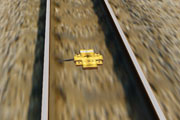
About 25 to 30 meters in front of a signal, an immediate stop transponder (yellow box) is usually placed. If the associated signal is red, passing the transponder will trigger the service brakes immediately. In order to release the brake application, cut off power, move the reverser to neutral, apply full service brakes, then press the SECURITY_B1 (home) key. The brake application will now be released. Alternatively, you can also acquire a brake release for 60 seconds by pressing the SECURITY_B2 (end) key. This is usually only done as an override mechanism to get a train approach a red signal more closely or to even pass the red signal, without triggering further brake applications.
After stop points, an accidental departure transponder (red box) is sometimes placed. If the associated signal is red, this transponder directly forces an emergency brake application. The safety system will be switched to ATS-SN for this purpose.
Trains equipped with ATS-P include these indicators in the bottom-right corner of the screen:
| P POWER | This is lit green when ATS-P is currently active or can be switched to if ATS-SN is currently active. |
| PTN APPROACH | This is lit orange when the train exceeds the calculated speed limit. |
| BRAKE RELEASE | This is lit orange when a brake release was acquired for 60 seconds. |
| BRAKE APPLY | This is lit orange when the services brakes are applied by ATS-P. |
| ATS-P | This is lit green when ATS-P is currently active (turned on). |
| FAILURE | This is lit red whenever a failure occurs in the ATS-P system, and also briefly upon initialization of the safety system. |
Using ATC
ATC (automatic train control) is a Japanese safety system which replaces track-side signals by an in-cab signalling system. The system receives the location of the preceding train and can automatically determine the appropriate speed limit that needs to be followed. The openBVE implementation is a simplified and joined version of the great variety of ATC systems that exist in the real world.
The track must be equipped with ATC before it can be used. In order to activate the system, press the SECURITY_C2 (page down) key in order to switch from ATS to ATC. You can switch back to ATS at any time by pressing SECURITY_C1 (page up). Some trains can automatically switch between ATS and ATC at stations. On others, you will need to do this manually. You can turn on the safety systems by pressing the SECURITY_D (2) key, and off by pressing the SECURITY_E (3) key.
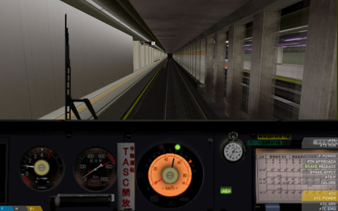
Usually, the in-cab signalling elements are placed around the speedometer and indicate the speed currently allowed to maintain.
In km/h, the speed limits that can apply by ATC are:
If ATC is currently active, but the track is not equipped with ATC, a special symbol is usually displayed (e.g. a cross), while when ATS is currently active, this is also sometimes highlighted by a special symbol (e.g. ATS).
If the track is not equipped with ATC, an emergency brake application will be performed. If the track is equipped with ATC, but the train exceeds the permitted speed limit, a service brake application will be performed until the train travels below the speed limit.
Trains equipped with ATC include these indicators in the bottom-right corner of the screen:
| ATC | This is lit orange when ATC is currently active (turned on). |
| ATC POWER | This is lit orange when then ATC is currently active or when the train can be automatically switched to ATC at stations. |
| ATC SRV | This is lit orange when a service brake application is performed, usually as a result of exceeding the speed limit. |
| ATC EMG | This is lit orange when an emergency brake application is performed, usually due to the fact that the track is not equipped with ATC. |
Miscellaneous interface elements
There is a series of other interface elements that are worth taking a look at. These are presented in the following.
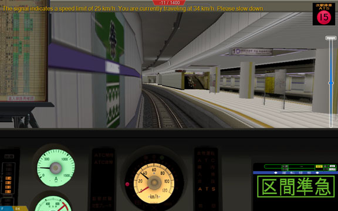
At the top-left of the screen, information messages are displayed. These are white
for system messages such as switching to external views, orange
for warnings, such as exceeding the speed limit, and red
for emergencies, such as passing red signals.
At the top top-middle of the screen, the current score is displayed if you are driving in Arcade mode.
At the top-right of the screen, some routes display so-called markers in places, which are informational or advisory images.
At the center-left or center-right of the screen, a stop indicator appears when inside station areas. The left indicator is shown when the left doors are expected to be opened, while the right indicator is likewise shown for the right doors.
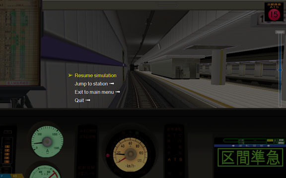
The in-game menu allows you to return to the main menu, to exit the simulation, or to jump to different stations. The menu is accessible via the MENU_ACTIVATE (esc) key. Scrolling is done via the MENU_UP (up) and MENU_DOWN (down) keys. Press MENU_ENTER (return) to perform the selection, and MENU_BACK (esc) to return to the previous menu or to exit the menu. While the in-game menu is showing, the simulation is paused.